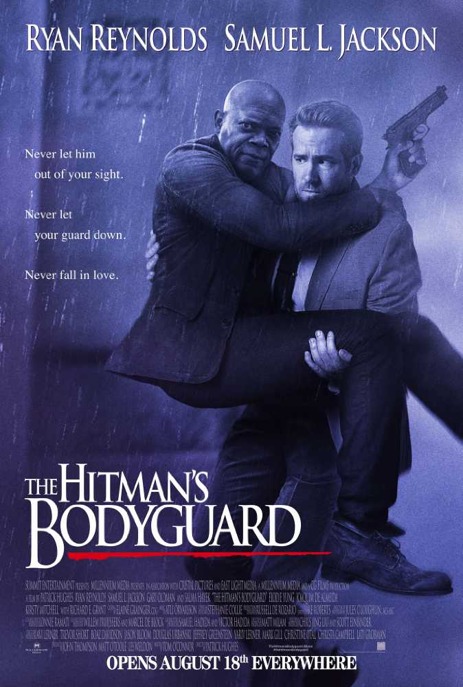

Deadpool 2
Language : English
Release Date : May 18 2018
Release Date : Dec 21 2018 (as Once Upon a Deadpool PG-13)
Genre : Superhero(No)
All RatingsGrab Your Tickets Now
Via PayTm :
Via BookMyShow :
Via Fandango :
Via MovieTickets :
Via Cineworld :
Official Social Media Accounts
Facebook :
Twitter :
Instagram :
Official Website
Similar Movie(s) That You Might Like

Deadpool 2 is Similar to Deadpool 2 beacuse they're the same f*king movie

Avengers: Infinity War

DeThe Hitman's Bodyguard
Description
Cast: Ryan Reynolds, Brianna Hildebrand, T.J. Miller, Michael Shannon, Zazie Beetz, Karan Soni, Stefan Kapicic, Fred Savage(Once Upon a Deadpool)
Director: Jon Watts
Based On: Deadpool by Rob Liefeld and Fabian Nicieza
Plot
After surviving a near fatal bovine attack, a disfigured cafeteria chef (Wade Wilson) struggles to fulfill his dream of becoming Mayberry's hottest bartender while also learning to cope with his lost sense of taste. Searching to regain his spice for life, as well as a flux capacitor, Wade must battle ninjas, the yakuza, and a pack of sexually aggressive canines, as he journeys around the world to discover the importance of family, friendship, and flavor - finding a new taste for adventure and earning the coveted coffee mug title of World's Best Lover. Source:IMDB
Reviews and News(After Release)
Ryan Reynolds kidnaps Fred Savage for a nudity-free, curse-free Once Upon a Deadpool trailer. WatchBy:Hindustan Times - 20 November,2018
Once Upon a Deadpool Trailer: Fred Savage Brings You a Kinder, Gentler, PG-13 Mutant AssassinBy:Vulture - 20 November,2018
Ryan Reynolds Kidnaps Fred Savage in ‘Once Upon a Deadpool’ TrailerBy:Variety - 19 November,2018
Deadpool 2 brings in Fred Savage for remixed Once Upon a DeadpoolBy:The Verge - 19 November,2018
Once Upon a Deadpool Trailer: Celebrate Christmas With Fred SavageBy:Screen Rant - 19 November,2018
Deadpool 2: The Super Duper Cut promises more ridiculous actionBy:CNET - 09 July,2018
'Deadpool 2: Uncut' to screen at Comic-ConBy:Business Standard - 09 July,2018
'Deadpool 2': What Did You Think?By:Collider.com - 19 May,2018
'Deadpool 2' Heads for Heroic $130 Million Opening WeekendBy:Variety - 19 May,2018
All the ridiculous Deadpool 2 marketing stunts you may have missedBy:The Verge - 19 May,2018
Ryan Reynolds has a second, secret role in Deadpool 2By:Polygon - 18 May,2018
'Deadpool 2' Team on Pressure to Replicate Success of First FilmBy:Hollywood Reporter - 18 May,2018
Deadpool crashes Colbert and unleashes some top-notch, lowbrow Trump humorBy:Los Angeles Times - 16 May,2018
Deadpool's Fate at the Hands of Avengers Villain Thanos Revealed on 'The Late Show'By:Comicbook.com - 16 May,2018
'Deadpool 2': Ryan Reynolds on wooing Celine Dion, poking fun at 'Frozen'By:USA TODAY - 16 May,2018
Deadpool 2: A solid second-act with only a whiff of deja vuBy:Stuff.co.nz - 16 May,2018
How 'Deadpool 2' Referenced Every Superhero Franchise From Marvel to DCBy:Inquirer.net - 16 May,2018
Deadpool 2 Reviews Roundup: What Are The Critics Saying?By:GameSpot - 16 May,2018
Ryan Reynolds Hijacks Stephen Colbert's 'Late Show' Monologue as DeadpoolBy:Entertainment Tonight - 16 May,2018
Ryan Reynold's Deadpool 2 promotional campaign was clever — until it became tiresomeBy:Firstpost - 16 May,2018
Watch Ryan Reynolds and Josh Brolin crack each other up with 'Playground Insults'By:EW.com - 16 May,2018
News(Before Release)
Dave Bautista Went To See 'Deadpool' Six TimesBy:Comicbook.com - 26 April,2018
Poll: Which Summer Tentpole Are You Most Excited to See?By:Variety - 25 April,2018
IMAX Unveils Brand New Exclusive Poster For 'Deadpool 2'By:Heroic Hollywood - 25 April,2018
Deadpool 2 Releases Unflinchingly Dark & Violent IMAX PosterBy:LRM Online - 25 April,2018
Deadpool 2 Just Released the Most Perfectly Ridiculous PosterBy:IGN - 25April,2018
Deadpool 2 Heads Over the Rainbow in Adorable IMAX PosterBy:CBR - 25April,2018
Deadpool Two Year Anniversary Edition Blu-ray AnnouncedBy:IGN India - 25April,2018
Deadpool rides a rainbow unicorn in Lisa Frank-inspired IMAX posterBy:Looper - 25 April,2018
Deadpool 2 poster is a tribute to the merc's unicorn obsessionBy:EW.com - 24 April,2018
Deadpool Two Year Anniversary Blu-ray Details Unveiled!By:ComingSoon.net - 24 April,2018
Of Course Deadpool Is Celebrating The 2-Year Anniversary of Its Home Video Release!By:Screen Rant - 24 April,2018
The Merc Gets A Cartoon Makeover For Deadpool 2's Zany IMAX PosterBy:We Got This Covered - 24 April,2018
Deadpool Brings Sackload of Party Favors For A Two-Year Anniversary Blu-ray and SteelbookBy:Broadway World - 24 April,2018
How Does 'Deadpool 2' Differ From The OriginalBy:Science Fiction - 24 April,2018
'Deadpool 2' Trailer Has One Clear WinnerBy:Hollywood Reporter - 20 April,2018
'Teen Titans Go' Fires Back At 'Deadpool' Star Ryan Reynolds' Slam Of The DCEUBy:Comicbook.com - 20 April,2018
'Deadpool 2' Final Trailer: Ryan Reynolds, Josh Brolin In Dark Battle Of Wits & FistsBy:Deadline - 19 April,2018
Fox Saved The Best 'Deadpool 2' Trailer For LastBy:Forbes - 19 April,2018
Deadpool Crashes Spider-Man: Homecoming in Fan PosterBy:Screen Rant
Brad Pitt to join 'Deadpool 2'?By:NME.com
Brad Pitt as Cable in Deadpool 2 was apparently close to happeningBy:Digital Spy
Michael Shannon Frontrunner to Play Cable in 'Deadpool 2'By:Variety